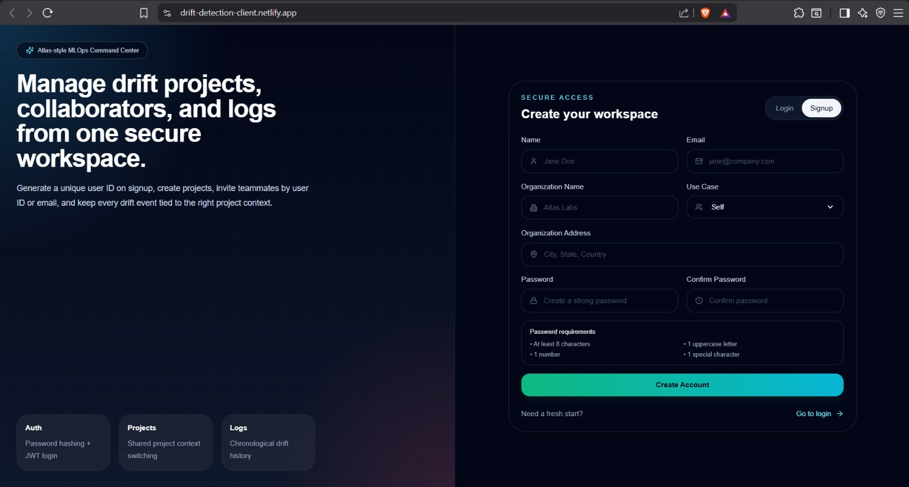

01 / 06 — MLOps
Model Monitoring & Drift
2026 · In progress
Model Monitoring & Drift
2026 · In progress
ML Model Monitoring & Drift Detection
An end-to-end monitoring framework guarding models in production — 25+ automated tests spanning univariate, multivariate, data-quality, data-drift and concept-drift scenarios, with eight statistical detectors from KS and Chi-Square to PSI, Wasserstein distance, Jensen–Shannon divergence, CUSUM and PCA-Mahalanobis, explained through SHAP. Served by FastAPI, surfaced in a React dashboard, shipped in Docker.
View case